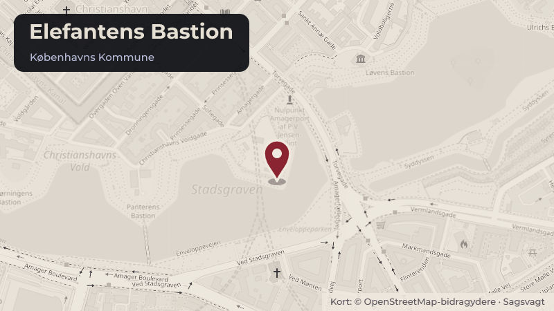

Behandlet 30. september, Christianshavn Lokaludvalg
Om mødet den 30. september 2026 i Christianshavns Lokaludvalg
Mødet startede kl. 18.30 og sluttede kl. 21.06. Om dagsordenen Dagsordenen blev behandlet i denne rækkefølge: 1. Åben spørgetid 2. Referat og godkendelse af dagsordenen 14. Henvendelse om fordeling af haltider til CIK Håndbold i Hal C 15. Henvendelse om snerydning 17.
Steder i sagen: Elefantens Bastion · Refshaleøen · Christianshavns Torv

Kort fortalt
- Hvem
- Christianshavn Lokaludvalg
- Hvornår
- Onsdag 30. september 2026
- Status
- Behandlet. Referatet med beslutningen er ikke offentliggjort endnu.
Læs hele sagen Kommunens egen tekst
Kilde: Københavns Kommune, Christianshavns Lokaludvalg, referat fra mødet onsdag 30. september 2026, punkt 28. Læs den originale sag hos kommunen.